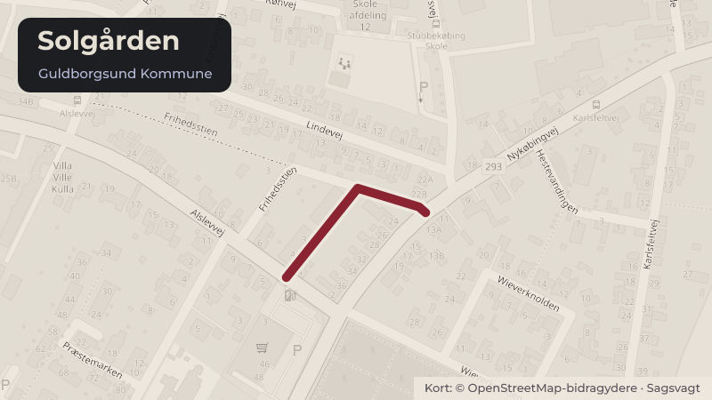

Besluttet 7. september, Økonomi- & Erhvervsudvalget, Guldborgsund
Solgården - nedlæggelse af kommunale almene ældreboliger
Byrådet skal træffe beslutning om nedlæggelse af de kommunale almene ældreboliger beliggende Solgårdsvej 7, Herritslev, 4880 Nysted (Solgården).
Bydele i sagen: Nysted
Steder i sagen: Solgården · Solgårdsvej

Kort fortalt
- Forslaget
- De kommunale almene ældreboliger beliggende på Solgårdsvej 7, Herritslev, 4880 Nysted
- Hvem
- Økonomi- & Erhvervsudvalget, Guldborgsund Kommune
- Hvornår
- Mandag 7. september 2026
- Status
- Besluttet. Sundheds- & Omsorgsudvalgets anbefaling indstilles overfor Byrådet. UDVALGTE.Beslutningen er forkortet her. Læs hele beslutningen
Læs hele sagen Kommunens egen tekst
Indstilling
Direktionen indstiller til Sundheds- & Omsorgsudvalget at anbefale Økonomi- & Erhvervsudvalget og
Byrådet:
1. at de kommunale almene ældreboliger beliggende på Solgårdsvej 7, Herritslev, 4880 Nysted
(Solgården) nedlægges pr. 1. januar 2027.
Sagsfremstilling
Ejendommen Solgården overdrages i henhold til Bodelingsaftale vedrørende Sundhedsreformens
opgaveflyt mellem Guldborgsund Kommune og Region Østdanmark til Region Østdanmark pr. 1. januar
Guldborgsund Kommune har i overvejende grad anvendt ældreboligerne på Solgården til midlertidige
døgnopholdspladser (MDO-pladser). Fremadrettet vil regionen anvende Solgården til sundheds- og
omsorgspladser. Der er mellem Guldborgsund Kommune og Region Østdanmark indgået en horisontal
samarbejdsaftale om drift af de regionale sundheds- og omsorgspladser.
Den varige ændring i anvendelsen til de nye sundheds- og omsorgspladser falder uden for definitionen af
en almen bolig (almenboliglovens § 1), og de tidligere ældreboliger vil ikke længere være omfattet af
reglerne i almenboligloven.
Boligerne skal derfor nedlægges som almene ældreboliger pr. 1. januar 2027, hvorefter støtten efter
almenboligloven ophører.
Overdragelsessummen fastsættes efter de gældende regler for overdragelse af kommunale ejendomme,
herunder reglerne i overgangsloven. Regionen skal jf. reglerne i overgangsloven overtage gælden
vedrørende Solgården. Regionen indfrier det eksisterende lån og optager samtidig nyt lån, således at
regionen blandt andet får mulighed for, inden for lånebekendtgørelsens rammer, at aftale lånevilkårene
med långiver.
Regionerne er meddelt dispensation til at kunne optage lån til indfrielse af lån i forbindelse med
overdragelse af kommunale almene ældreboliger som led i sundhedsreformen – meddelt af Indenrigs- og
Sundhedsministeriet den 18. maj 2026.
Restgælden er i bilag til bodelingsaftalen oplyst til 10,854 mio. kr.
Der udarbejdes refusionsopgørelse efter sædvanlig praksis med skæringsdato pr. 1. januar 2027.
Aktuelt er 4 ældreboliger udlejet. Der er igangsat en proces med henblik på genhusning af de pågældende
beboere.
De kommunale budget- og regnskabsmæssige konsekvenser i forbindelse med nedlæggelse af de
kommunale ældreboliger vil blive berigtiget i kommunens regnskab for 2027.
Udbetaling Danmark og Landsbyggefonden skal orienteres om beslutningen.
Sammenhæng til politiske strategier
Sagen har sammenhæng til Sundhedsreformen.
Økonomi
Sagen har ingen bevillingsmæssige konsekvenser.
Behandling i Sundheds- & Omsorgsudvalget 24. august 2026
Fraværende: Heidi Utermøhl (A) - Fravær grundet ferie
Anbefales godkendt.
Beslutning
Fraværende: John Brædder (L) - Fravær med afbud - Stedfortræder: Janne Hansen
Sundheds- & Omsorgsudvalgets anbefaling indstilles overfor Byrådet.
UDVALGTE
Bilag
- Offentlig
- Bodelingsaftale mellem Guldborgsund Kommune og Det Forberedende
- Regionsråd i Østdanmark - med underskrift Region Sjælland
Kilde: Guldborgsund Kommune, Økonomi- & Erhvervsudvalget, referat fra mødet mandag 7. september 2026, punkt 4. Læs den originale sag hos kommunen.